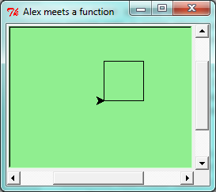
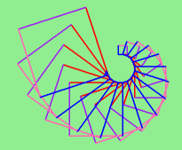
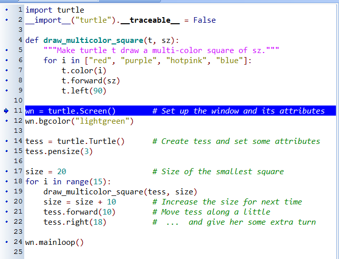
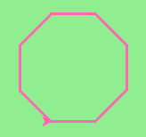
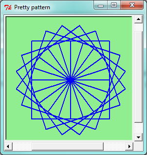
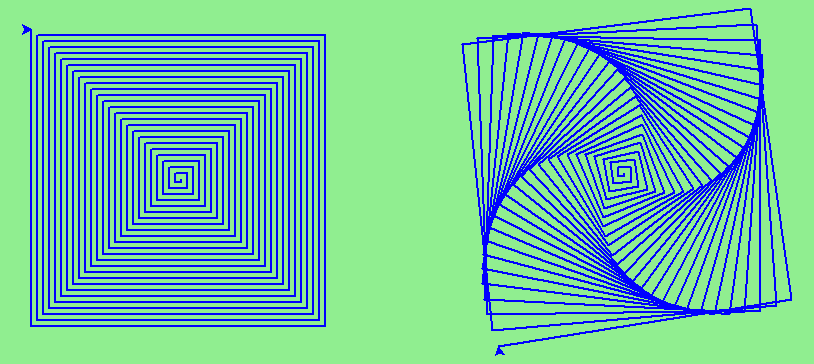
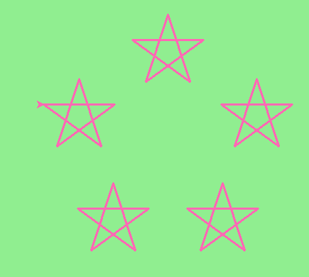

4. Functions¶
4.1. Functions¶
In Python, a function is a named sequence of statements that belong together. Their primary purpose is to help us organize programs into chunks that match how we think about the problem.
The syntax for a function definition is:
def NAME( PARAMETERS ): STATEMENTS
We can make up any names we want for the functions we create, except that we can’t use a name that is a Python keyword, and the names must follow the rules for legal identifiers.
There can be any number of statements inside the function, but they have to be
indented from the def. In the examples in this book, we will use the
standard indentation of four spaces. Function definitions are the second of
several compound statements we will see, all of which have the same
pattern:
- A header line which begins with a keyword and ends with a colon.
- A body consisting of one or more Python statements, each indented the same amount — the Python style guide recommends 4 spaces — from the header line.
We’ve already seen the for loop which follows this pattern.
So looking again at the function definition, the keyword in the header is def, which is
followed by the name of the function and some parameters enclosed in
parentheses. The parameter list may be empty, or it may contain any number of
parameters separated from one another by commas. In either case, the parentheses are required.
The parameters specifies what information, if any, we have to provide in order to use the new function.
Suppose we’re working with turtles, and a common operation we need is to draw squares. “Draw a square” is an abstraction, or a mental chunk, of a number of smaller steps. So let’s write a function to capture the pattern of this “building block”:

This function is named draw_square. It has two parameters: one to tell
the function which turtle to move around, and the other to tell it the size
of the square we want drawn. Make sure you know where the body of the function
ends — it depends on the indentation, and the blank lines don’t count for
this purpose!
Docstrings for documentation
If the first thing after the function header is a string, it is treated as a docstring and gets special treatment in Python and in some programming tools. For example, when we type a built-in function name with an unclosed parenthesis in PyScripter, a tooltip pops up, telling us what arguments the function takes, and it shows us any other text contained in the docstring.
Docstrings are the key way to document our functions in Python and the documentation part is important. Because whoever calls our function shouldn’t have to need to know what is going on in the function or how it works; they just need to know what arguments our function takes, what it does, and what the expected result is. Enough to be able to use the function without having to look underneath. This goes back to the concept of abstraction of which we’ll talk more about.
Docstrings are usually formed using triple-quoted strings as they allow us to easily expand the docstring later on should we want to write more than a one-liner.
Just to differentiate from comments, a string at the start of a function (a docstring) is retrievable by Python tools at runtime. By contrast, comments are completely eliminated when the program is parsed.
Defining a new function does not make the function run. To do that we need a
function call. We’ve already seen how to call some built-in functions like
print, range and int. Function calls contain the name of the function being
executed followed by a list of values, called arguments, which are assigned
to the parameters in the function definition. So in the second last line of
the program, we call the function, and pass alex as the turtle to be manipulated,
and 50 as the size of the square we want. While the function is executing, then, the
variable sz refers to the value 50, and the variable t refers to the same
turtle instance that the variable alex refers to.
Once we’ve defined a function, we can call it as often as we like, and its
statements will be executed each time we call it. And we could use it to get
any of our turtles to draw a square. In the next example, we’ve changed the draw_square
function a little, and we get tess to draw 15 squares, with some variations.

4.2. Functions can call other functions¶
Let’s assume now we want a function to draw a rectangle. We need to be able to call the function with different arguments for width and height. And, unlike the case of the square, we cannot repeat the same thing 4 times, because the four sides are not equal.
So we eventually come up with this rather nice code that can draw a rectangle.
The parameter names are deliberately chosen as single letters to ensure they’re not misunderstood. In real programs, once we’ve had more experience, we will insist on better variable names than this. But the point is that the program doesn’t “understand” that we’re drawing a rectangle, or that the parameters represent the width and the height. Concepts like rectangle, width, and height are the meaning we humans have, not concepts that the program or the computer understands.
Thinking like a scientist involves looking for patterns and relationships. In the code above, we’ve done that to some extent. We did not just draw four sides. Instead, we spotted that we could draw the rectangle as two halves, and used a loop to repeat that pattern twice.
But now we might spot that a square is a special kind of rectangle. We already have a function that draws a rectangle, so we can use that to draw our square.
There are some points worth noting here:
- Functions can call other functions.
- Rewriting
draw_squarelike this captures the relationship that we’ve spotted between squares and rectangles. - A caller of this function might say
draw_square(tess, 50). The parameters of this function,txandsz, are assigned the values of the tess object, and the int 50 respectively. - In the body of the function they are just like any other variable.
- When the call is made to
draw_rectangle, the values in variablestxandszare fetched first, then the call happens. So as we enter the top of functiondraw_rectangle, its variabletis assigned the tess object, andwandhin that function are both given the value 50.
So far, it may not be clear why it is worth the trouble to create all of these new functions. Actually, there are a lot of reasons, but this example demonstrates two:
- Creating a new function gives us an opportunity to name a group of statements. Functions can simplify a program by hiding a complex computation behind a single command. The function (including its name) can capture our mental chunking, or abstraction, of the problem.
- Creating a new function can make a program smaller by eliminating repetitive code.
As we might expect, we have to create a function before we can execute it. In other words, the function definition has to be executed before the function is called.
4.3. Flow of execution¶
In order to ensure that a function is defined before its first use, we have to know the order in which statements are executed, which is called the flow of execution. We’ve already talked about this a little in the previous chapter.
Execution always begins at the first statement of the program. Statements are executed one at a time, in order from top to bottom.
Function definitions do not alter the flow of execution of the program, but remember that statements inside the function are not executed until the function is called. Although it is not common, we can define one function inside another. In this case, the inner definition isn’t executed until the outer function is called.
Function calls are like a detour in the flow of execution. Instead of going to the next statement, the flow jumps to the first line of the called function, executes all the statements there, and then comes back to pick up where it left off.
That sounds simple enough, until we remember that one function can call another. While in the middle of one function, the program might have to execute the statements in another function. But while executing that new function, the program might have to execute yet another function!
Fortunately, Python is adept at keeping track of where it is, so each time a function completes, the program picks up where it left off in the function that called it. When it gets to the end of the program, it terminates.
What’s the moral of this sordid tale? When we read a program, don’t read from top to bottom. Instead, follow the flow of execution.
Watch the flow of execution in action
In PyScripter, we can watch the flow of execution by “single-stepping” through any program. PyScripter will highlight each line of code just before it is about to be executed.
PyScripter also lets us hover the mouse over any variable in the program, and it will pop up the current value of that variable. So this makes it easy to inspect the “state snapshot” of the program — the current values that are assigned to the program’s variables.
This is a powerful mechanism for building a deep and thorough understanding of what is happening at each step of the way. Learn to use the single-stepping feature well, and be mentally proactive: as you work through the code, challenge yourself before each step: “What changes will this line make to any variables in the program?” and “Where will flow of execution go next?”
Let us go back and see how this works with the program above that draws 15 multicolor squares. First, we’re going to add one line of magic below the import statement — not strictly necessary, but it will make our lives much simpler, because it prevents stepping into the module containing the turtle code.
import turtle __import__("turtle").__traceable__ = False
Now we’re ready to begin. Put the mouse cursor on the line of the program where we create the turtle screen, and press the F4 key. This will run the Python program up to, but not including, the line where we have the cursor. Our program will “break” now, and provide a highlight on the next line to be executed, something like this:
At this point we can press the F7 key (step into) repeatedly to single step through the code. Observe as we execute lines 10, 11, 12, … how the turtle window gets created, how its canvas color is changed, how the title gets changed, how the turtle is created on the canvas, and then how the flow of execution gets into the loop, and from there into the function, and into the function’s loop, and then repeatedly through the body of that loop.
While we do this, we can also hover our mouse over some of the variables in the program, and confirm that their values match our conceptual model of what is happening.
After a few loops, when we’re about to execute line 20 and we’re starting to get bored, we can use the key F8 to “step over” the function we are calling. This executes all the statements in the function, but without having to step through each one. We always have the choice to either “go for the detail”, or to “take the high-level view” and execute the function as a single chunk.
There are some other options, including one that allow us to resume execution without further stepping. Find them under the Run menu of PyScripter.
4.4. Functions that require arguments¶
Most functions require arguments: the arguments provide for generalization. For example, if we want to find the absolute value of a number, we have to indicate what the number is. Python has a built-in function for computing the absolute value:
>>> abs(5) 5 >>> abs(-5) 5
In this example, the arguments to the abs function are 5 and -5.
Some functions take more than one argument. For example the built-in function
pow takes two arguments, the base and the exponent. Inside the function,
the values that are passed get assigned to variables called parameters.
>>> pow(2, 3) 8 >>> pow(7, 4) 2401
Another built-in function that takes more than one argument is max.
>>> max(7, 11) 11 >>> max(4, 1, 17, 2, 12) 17 >>> max(3 * 11, 5**3, 512 - 9, 1024**0) 503
max can be passed any number of arguments, separated by commas, and will
return the largest value passed. The arguments can be either simple values or
expressions. In the last example, 503 is returned, since it is larger than 33,
125, and 1.
4.5. Functions that return values¶
All the functions in the previous section return values.
Furthermore, functions like range, int, abs all return values that
can be used to build more complex expressions.
So an important difference between these functions and one like draw_square is that
draw_square was not executed because we wanted it to compute a value — on the contrary,
we wrote draw_square because we wanted it to execute a sequence of steps that caused
the turtle to draw.
A function that returns a value is called a fruitful function in this book.
The opposite of a fruitful function is void function — one that is not executed
for its resulting value, but is executed because it does something useful. (Languages
like Java, C#, C and C++ use the term “void function”, other languages like Pascal
call it a procedure.) Even though void functions are not executed
for their resulting value, Python always wants to return something. So if the programmer
doesn’t arrange to return a value, Python will automatically return the value None.
How do we write our own fruitful function? In the exercises at the end of chapter 2 we saw the standard formula for compound interest, which we’ll now write as a fruitful function:

The return statement is followed by an expression (
ain this case). This expression will be evaluated and returned to the caller as the “fruit” of calling this function.We prompted the user for the principal amount. The type of
toInvestis a string, but we need a number before we can work with it. Because it is money, and could have decimal places, we’ve used thefloattype converter function to parse the string and return a float.Notice how we entered the arguments for 8% interest, compounded 12 times per year, for 5 years.
When we run this, we get the output
At the end of the period you’ll have 14898.457083
This is a bit messy with all these decimal places, but remember that Python doesn’t understand that we’re working with money: it just does the calculation to the best of its ability, without rounding. Later we’ll see how to format the string that is printed in such a way that it does get nicely rounded to two decimal places before printing.
The line
toInvest = float(input("How much do you want to invest?"))also shows yet another example of composition — we can call a function likefloat, and its arguments can be the results of other function calls (likeinput) that we’ve called along the way.
Notice something else very important here. The name of the variable we pass as an
argument — toInvest — has nothing to do with the name of the parameter
— p. It is as if p = toInvest is executed when final_amt is called.
It doesn’t matter what the value was named in
the caller, in final_amt its name is p.
These short variable names are getting quite tricky, so perhaps we’d prefer one of these versions instead:
They all do the same thing. Use your judgement to write code that can be best understood by other humans! Short variable names are more economical and sometimes make code easier to read: E = mc2 would not be nearly so memorable if Einstein had used longer variable names! If you do prefer short names, make sure you also have some comments to enlighten the reader about what the variables are used for.
4.6. Variables and parameters are local¶
When we create a local variable inside a function, it only exists inside the function, and we cannot use it outside. For example, consider again this function:
If we try to use a, outside the function, we’ll get an error:
>>> a NameError: name 'a' is not defined
The variable a is local to final_amt, and is not visible
outside the function.
Additionally, a only exists while the function is being executed —
we call this its lifetime.
When the execution of the function terminates,
the local variables are destroyed.
Parameters are also local, and act like local variables.
For example, the lifetimes of p, r, n, t begin when final_amt is called,
and the lifetime ends when the function completes its execution.
So it is not possible for a function to set some local variable to a value, complete its execution, and then when it is called again next time, recover the local variable. Each call of the function creates new local variables, and their lifetimes expire when the function returns to the caller.
4.7. Turtles Revisited¶
Now that we have fruitful functions, we can focus our attention on reorganizing our code so that it fits more nicely into our mental chunks. This process of rearrangement is called refactoring the code.
Two things we’re always going to want to do when working with turtles is to create the window for the turtle, and to create one or more turtles. We could write some functions to make these tasks easier in future:
The trick about refactoring code is to anticipate which things we are likely to want to change each time we call the function: these should become the parameters, or changeable parts, of the functions we write.
4.8. Glossary¶
- argument
- A value provided to a function when the function is called. This value is assigned to the corresponding parameter in the function. The argument can be the result of an expression which may involve operators, operands and calls to other fruitful functions.
- body
- The second part of a compound statement. The body consists of a sequence of statements all indented the same amount from the beginning of the header. The standard amount of indentation used within the Python community is 4 spaces.
- compound statement
A statement that consists of two parts:
- header - which begins with a keyword determining the statement type, and ends with a colon.
- body - containing one or more statements indented the same amount from the header.
The syntax of a compound statement looks like this:
keyword ... : statement statement ...
- docstring
- A special string that is attached to a function as its
__doc__attribute. Tools like PyScripter can use docstrings to provide documentation or hints for the programmer. When we get to modules, classes, and methods, we’ll see that docstrings can also be used there. - flow of execution
- The order in which statements are executed during a program run.
- frame
- A box in a stack diagram that represents a function call. It contains the local variables and parameters of the function.
- function
- A named sequence of statements that performs some useful operation. Functions may or may not take parameters and may or may not produce a result.
- function call
- A statement that executes a function. It consists of the name of the function followed by a list of arguments enclosed in parentheses.
- function composition
- Using the output from one function call as the input to another.
- function definition
- A statement that creates a new function, specifying its name, parameters, and the statements it executes.
- fruitful function
- A function that returns a value when it is called.
- header line
- The first part of a compound statement. A header line begins with a keyword and ends with a colon (:)
- import statement
- A statement which permits functions and variables defined in another Python module to be brought into the environment of another script. To use the features of the turtle, we need to first import the turtle module.
- lifetime
- Variables and objects have lifetimes — they are created at some point during program execution, and will be destroyed at some time.
- local variable
- A variable defined inside a function. A local variable can only be used inside its function. Parameters of a function are also a special kind of local variable.
- parameter
- A name used inside a function to refer to the value which was passed to it as an argument.
- refactor
- A fancy word to describe reorganizing our program code, usually to make it more understandable. Typically, we have a program that is already working, then we go back to “tidy it up”. It often involves choosing better variable names, or spotting repeated patterns and moving that code into a function.
- stack diagram
- A graphical representation of a stack of functions, their variables, and the values to which they refer.
- traceback
- A list of the functions that are executing, printed when a runtime error occurs. A traceback is also commonly refered to as a stack trace, since it lists the functions in the order in which they are stored in the runtime stack.
- void function
- The opposite of a fruitful function: one that does not return a value. It is executed for the work it does, rather than for the value it returns.
4.9. Exercises¶
Write a void (non-fruitful) function to draw a square. Use it in a program to draw the image shown below. Assume each side is 20 units. (Hint: notice that the turtle has already moved away from the ending point of the last square when the program ends.)

Write a program to draw this. Assume the innermost square is 20 units per side, and each successive square is 20 units bigger, per side, than the one inside it.

Write a void function
draw_poly(t, n, sz)which makes a turtle draw a regular polygon. When called withdraw_poly(tess, 8, 50), it will draw a shape like this:Draw this pretty pattern.
The two spirals in this picture differ only by the turn angle. Draw both.
Write a void function
draw_equitriangle(t, sz)which callsdraw_polyfrom the previous question to have its turtle draw a equilateral triangle.Write a fruitful function
sum_to(n)that returns the sum of all integer numbers up to and includingn. Sosum_to(10)would be 1+2+3…+10 which would return the value 55.Write a function
area_of_circle(r)which returns the area of a circle of radiusr.Write a void function to draw a star, where the length of each side is 100 units. (Hint: You should turn the turtle by 144 degrees at each point.)

Extend your program above. Draw five stars, but between each, pick up the pen, move forward by 350 units, turn right by 144, put the pen down, and draw the next star. You’ll get something like this:
What would it look like if you didn’t pick up the pen?
{kind=link}